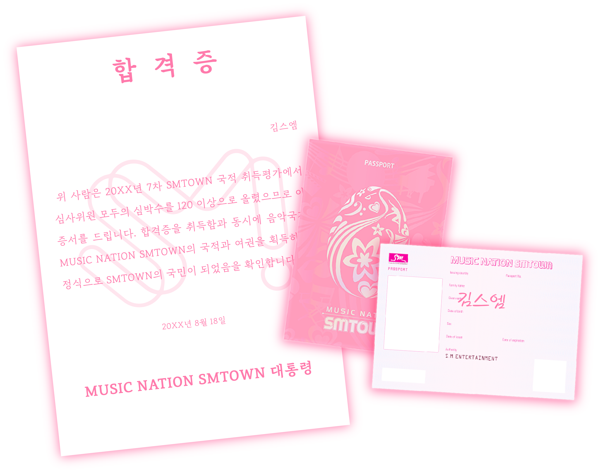

생후 3개월 째 옹알이를 'Girls on Top'으로 하며 국내외적 화제를 모으고 SMTOWN 부설유치원 조기입학
'No.1' 재롱잔치 조회수 70억 달성
12살이 되던 해에 SMTOWN 부설초등학교 수석 졸업
SMTOWN 부설중학교 수석 입학 및 차석 졸업
SMTOWN 부설고등학교 차석 입학 및 수석 졸업
SMTOWN 산하 국내 유일의 교육기관인 SMTOWN UNIVERSITY 수석 졸업
각종 SM 콘서트 및 굿즈 영수증 보유
팬싸인회 단독 최대 응모권 수 유네스코 기록 보유(2013.03.07)
뛰어난 티켓팅 실력으로 다수의 무료 티켓팅 봉사 40여회, 관련 상 수상
···
이렇게 셀 수 없는 경력을 가진 나, 김스엠. 지금까지 음악국가 뮤직네이션 SMTOWN의 국적을 얻기 위해 끊임없이 달려왔고, 드디어 SMTOWN의 국적을 얻을 수 있는 마지막 관문에 도달했다. 나도 드디어 SMTOWN의 정식 국민이 되어 SMTOWN PASSPORT로 당당하게 콘서트 도장을 찍을 수 있을 것이다. 오늘 시험만 성공적으로 본다면 말이지...!
'No.1' 재롱잔치 조회수 70억 달성
12살이 되던 해에 SMTOWN 부설초등학교 수석 졸업
SMTOWN 부설중학교 수석 입학 및 차석 졸업
SMTOWN 부설고등학교 차석 입학 및 수석 졸업
SMTOWN 산하 국내 유일의 교육기관인 SMTOWN UNIVERSITY 수석 졸업
각종 SM 콘서트 및 굿즈 영수증 보유
팬싸인회 단독 최대 응모권 수 유네스코 기록 보유(2013.03.07)
뛰어난 티켓팅 실력으로 다수의 무료 티켓팅 봉사 40여회, 관련 상 수상
···
"자.. 다들 고생 많았어요.. 마지막 단계는 어렵지 않아요.. 여러분이 지금까지 보여준 노력이라면 쉽지 않을까.. 하는데... 지금부터 여러분의 핑크빛 심장을 뛰게 했던 곡들을 적으면 됩니다. 심사위원이 채점을 할 때에.. 어, 시험지를 보고 심박수가 120 이상이 된다면 여러분은 자랑스러운 음악국가 뮤직네이션 SMTOWN의 국민이 되는 거지요. 하하. 그 중에 심사위원을 사로잡을 곡이 하나 쯤은 있겠죠? 모두 국민으로서 다시 뵐 수 있으면 좋겠네요. 엣셈 엣셈 화이팅!"
김스엠은 SMTOWN의 수장, 이수만 선생님의 설명을 들은 후, 잠시 눈을 감고 지난 20여년간 자신의 심장을 핑크빛으로 물들였던 명곡을 차분히 떠올렸다. 그리고 눈을 뜨고 막힘없이 답안지를 써내려 갔다. 그녀의 이마에선 연핑크빛 땀이 흘러내리고 있었다. 과연 김스엠은 SMTOWN의 국적을 획득할 수 있을까?
20XX학년도 7차 SMTOWN 국적 취득평가 문제지
아래에 지금까지 당신의 핑크빛 심장을 뛰게 했던 두 곡을 설명과 함께 서술하시오.
1. Hot Times (시험하지 말기) - S.M. The Ballad '제규종지'

키스할 때 눈뜨지 말라는 이상한 약속과 규현 선글라스를 곁들인...
2010년 11월 19일 SM엔터테인먼트의 발라드 프로젝트로 탄생한 그룹으로 트랙스 제이, 슈퍼주니어 규현, 샤이니 종현, 연습생 지노로 이루어져 있다. 각 멤버의 앞글자를 따서 'S.M. The Ballad 제규종지'라는 굉장히 1차원적인 그룹명이 탄생했다. 이를 두고 팬들 사이에서는 '간장종지'라고 불리기도 했다. S.M. The Ballad '제규종지'의 첫 앨범인 '너무 그리워 S.M. THe Ballad Vol.1'의 수록곡이며 음악방송 커플링 곡으로 무대영상도 남아있다.
작사 작곡 ONLY '유영진'으로 이루어진 곡으로써 발라드풍 SMP의 정석을 보여준다. 당시 슴덕들은 당연히 좋아할 수 밖에 없다. 유영진의 욕망이 가득 담겨 있기 때문에 브릿지 부분에서 3명이 연속으로 고음을 아주 내지른다. (약 17초간 이어진다.) 당시 19살의 연습생이었던 지노의 '네 곁에서라면 머슴인 것도 난. 괜. 찮. 다.'는 꽤나 누나들의 인기를 독차지했다. 곡 마지막에 제이의 랩 '덕수궁 돌담길 같은 건 걷지 말기 키스할 때는 도중에 눈뜨지 않기 새끼손가락 잡은 채 걷지 말기 우리사랑 절대로 절대로 시험하지 말기... 시험하지 말기...'가 킬링 포인트이다. 노래방에서 놓치면 억울한 부분.
사실 'Hot Times'는 지노와 가사 말고 무대로도 화제가 된 적이 있었다. 규현이 활동 중간에 쌍커풀이 풀려 쌍수를 하며 발라드 무대에서 '선글라스'를 끼게 된 것이다. '발라드에 선글라스가 웬말이냐'며 팬들을 당황시켜 놓고 막상 규현 자신은 당당하게 활동을 마무리했다.
↓내가 잘못 본건가 하고 안경 닦게 만드는 선글라스를 곁들인 발라드↓
2. 빛 (Hope) - H.O.T

진정한 에스엠의 국민이라면 초등학교 아침 조회 시간에 애국가 대신 부를 수 있는 정도...
2010년 8월 21일 SMTOWN Live 10' World Tour In Seoul에서 2대 국가(國假)로 선포되어 공식적인 SMTOWN 단체 행사 엔딩곡으로 사용되고 있다. 이 곡은 팬 뿐만 아니라 SM 아티스트라면 절대 모를 수 없는 곡이다. 강타가 작사·작곡·편곡에 단독 참여한 곡이다. 거의 강타 헌정곡...
콘서트나 추억 회상 시에 큰 힘을 발휘하는 '빛'은 콘서트를 보러온 팬들에게 마지막을 알려주며 돌출무대로 모든 아티스트가 나와 팬들과 소통하는 자리를 만든다. '빛'이 나오는 동안은 아껴뒀던 콘페티가 폭발하기 때문에 대포들이 영화같은 장면을 촬영하려 열을 올리기도 한다. 흰색 SMTOWN 콘서트 단체 티를 입고 콘페티가 흩날리는 무대 위에서 반짝반짝 빛나는 아티스트를 본다면 누구든 셔터를 열나게 누를 것이다. 2, 3층에 팬들은 특히 '빛'의 전주가 나옴과 동시에 짐을 정리하고 주변을 청소하는 등 파블로프의 개가 되기도 한다. 동시에 덥고 힘들었던(일반적으로 SMTOWN Live In Seoul은 8월 광복절 전후로 열린다.), 즐겁고 애틋했던 콘서트의 여운을 극대화시켜준다.
2021년 올해는 코로나로 인해 SMTOWN Live가 열리지 못했는데, 이를 대신하여 SM엔터테인먼트는 유튜브에 전 아티스트가 함께한 '빛 (Hope) Official Video를 업로드했다. 현재 조회수 800만회를 돌파하였으며, 코로나로 인해 회색빛으로 굳어가던 심장에 70억 인구에 핑크빛 혈액을 공급하였다.
↓스엠 아티스트가 총 출동한 온라인 애국가 영상 (Official)↓
두 번째 곡까지 모두 적은 김스엠은 연필을 내려 놓았다.시험이 모두 끝이 났다. 김스엠은 후련한 마음이 들었다. 후회는 없었다. 시험 문제를 쓰는 도중 SMTOWN과 함께 했던 20여 년의 추억이 스쳐지나갔다. 이제는 기다리는 일만 남았다.
그렇게 3일 뒤...
[SM뮤직통운 택배_배송완료] 고객님의 상품이 배송 완료 되었습니다. 합격을 축하드립니다.
SM타운에 오신 여러분을 환영합니다.
우리는 언어가 달라도 SM의 음악과 퍼포먼스라는 하나의 언어로
민족과 나라의 모든 것들을 허물 수 있는 새로운 SM타운이라는 가상의 국가를 만들게 되었습니다.
지금 이 자리에 함께 계신 여러분들은 음악국가 뮤직네이션 SM타운의 국민으로 초대되셨습니다.

우리는 언어가 달라도 SM의 음악과 퍼포먼스라는 하나의 언어로
민족과 나라의 모든 것들을 허물 수 있는 새로운 SM타운이라는 가상의 국가를 만들게 되었습니다.
지금 이 자리에 함께 계신 여러분들은 음악국가 뮤직네이션 SM타운의 국민으로 초대되셨습니다.